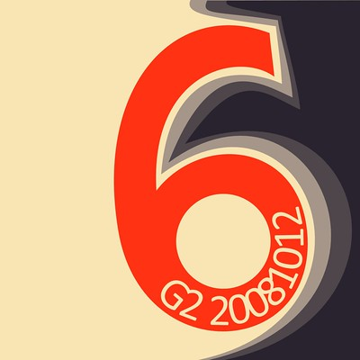
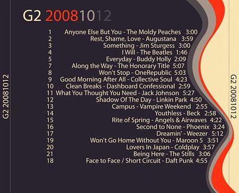

G2 20081012
You knew it would happen again. It's been almost a year since I finished the previous G2 (this one I finished on 10/10, so I'm one day short of a year). For those of you unfamiliar, the G2's are CD mixes I make for my wonderful wife, Maria. This one was made yet again for our anniversary. You'll never guess how long we've bee married. I like sharing the playlist/song with you, and telling a little about the design of the covers. I reserve the right to tell you what I want about the songs I selected for the album, as usual. Unlike the previous G2, this one didn't have a specific theme, or original set of music from which I selected.
Here's what I ended up going with for the album:
| Track | Title | Artist | Duration |
|---|---|---|---|
| 1 | Anyone Else But You | The Moldy Peaches | 3:02 |
| 2 | Rest, Shame, Love | Augustana | 4:01 |
| 3 | Something | Jim Sturgess | 3:02 |
| 4 | I Will | The Beatles | 1:48 |
| 5 | Everyday | Buddy Holly | 2:11 |
| 6 | Along the Way | The Honorary Title | 5:09 |
| 7 | Won't Stop | OneRepublic | 5:05 |
| 8 | Good Morning After All | Collective Soul | 4:25 |
| 9 | Clean Breaks | Dashboard Confessional | 3:01 |
| 10 | What You Thought You Need | Jack Johnson | 5:29 |
| 11 | Shadow Of The Day | Linkin Park | 4:52 |
| 12 | Campus | Vampire Weekend | 2:57 |
| 13 | Youthless | Beck | 3:00 |
| 14 | Rite of Spring | Angels & Airwaves | 4:24 |
| 15 | Second to None | Phoenix | 3:26 |
| 16 | Dreamin' | Weezer | 5:14 |
| 17 | Won't Go Home Without You | Maroon 5 | 3:53 |
| 18 | Lovers In Japan | Coldplay | 3:59 |
| 19 | Being Here | The Stills | 3:08 |
| 20 | Face to Face / Short Circuit | Daft Punk | 4:55 |

The front artwork is at the top of this post, and this fine piece here is the back artwork. Although I made this one for an anniversary, I didn't think it would be all that smart to overly highlight the number of years. One just just imagine a triplicate of that number, and the message that might convey. So, without really being able to play with that theme, I looked elsewhere.
- Veerle Pieters wrote yet another very insightful piece on her blog from which I found I could easily take some inspiration. I avoided using Illustrator, mainly because I'm not very familiar with it, and I was under a bit of a time crunch to get this done. I've been doing more with Illustrator, but now wasn't a good learning time. As usual, Fireworks to the rescue.
- Although none of the *cough*default*cough* typefaces are anything to be proud of, that 6 was drawn by yours truly. I'd be curious to do spend more time drawing characters/glyphs for a typeface. I don't have the eye to make the next Helvetica, but I might have some fun with it.
- Kuler gave me my color theme (I wish I had a link to the specific theme, but alas, my brain was elsewhere when I found it). Because I know you're curious, here's a simple strip for your color-picker purposes:
If there's any comfort in this album, it's in my commitment not to wait so long to make the next installment. Admitedly, I listened to a lot of books in the previous year, so I wasn't listening to as much music. Now that I've finished that insanely long series of books, I'm back to listening to music.
- Prior: Why Blog When you Can Tweet?
- Next: I Hope You're Sitting Down